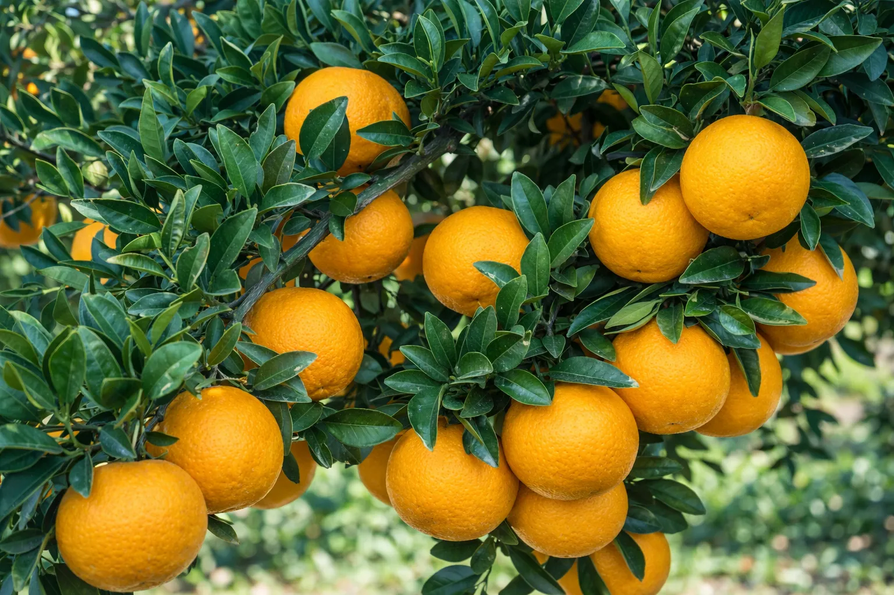
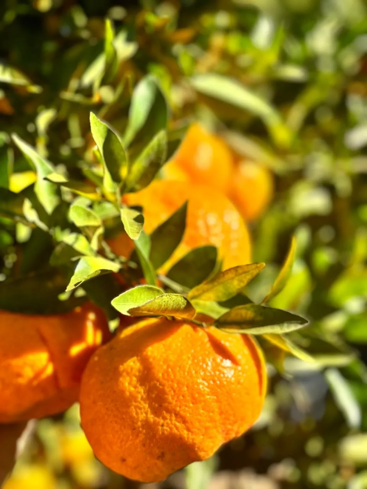
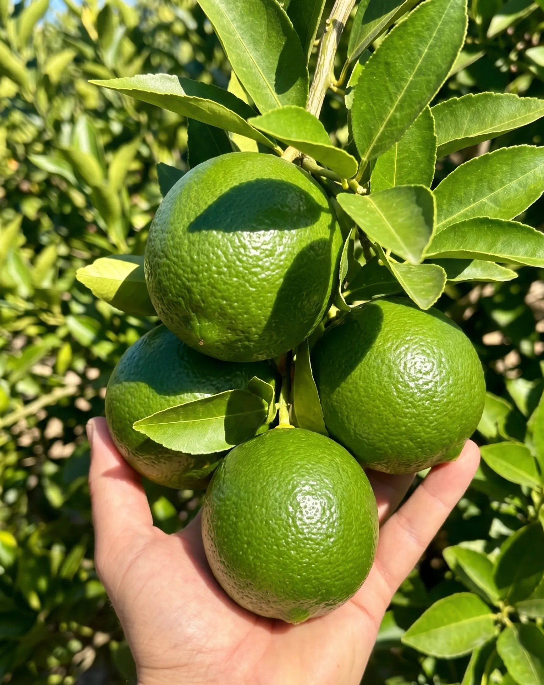
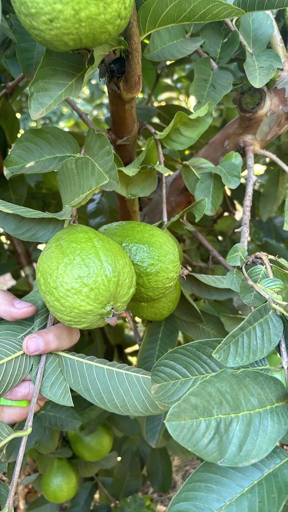
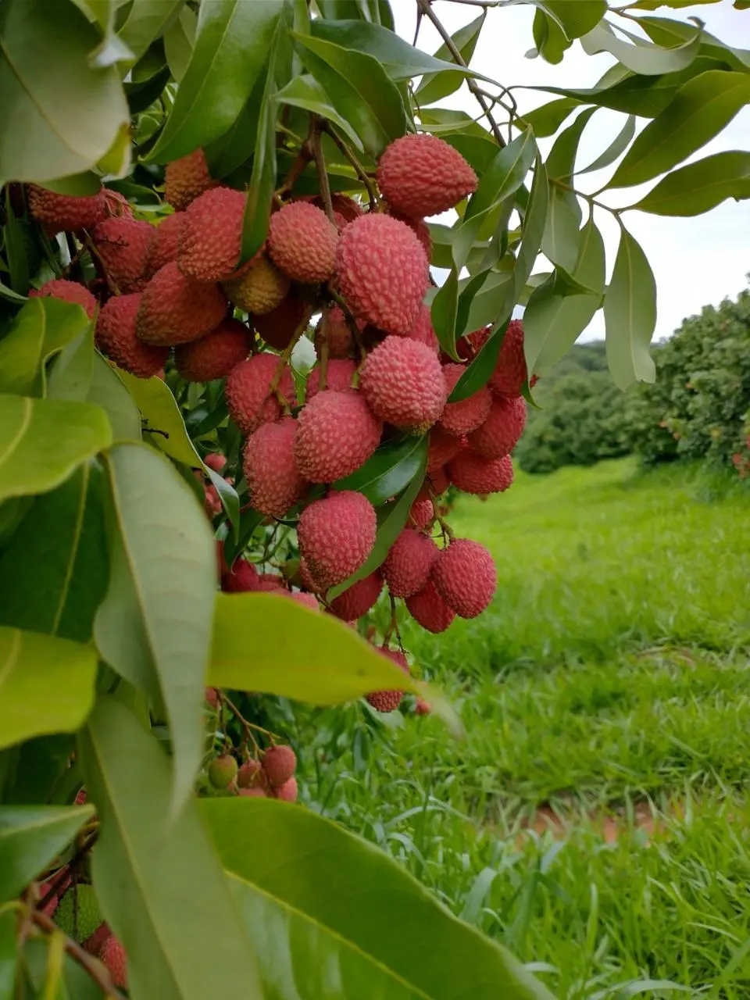
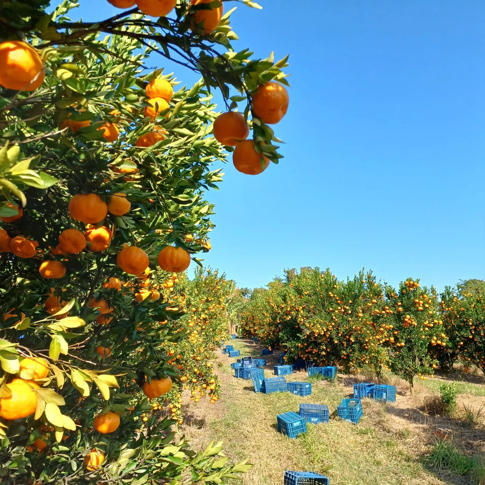
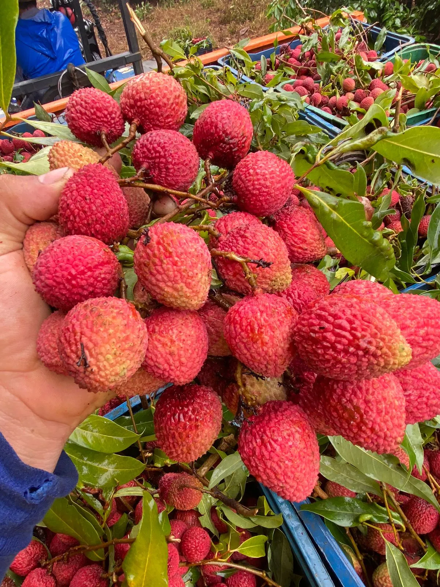
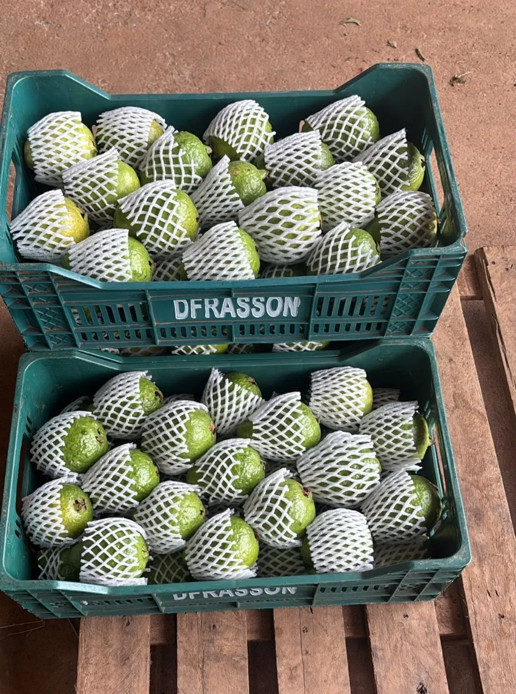
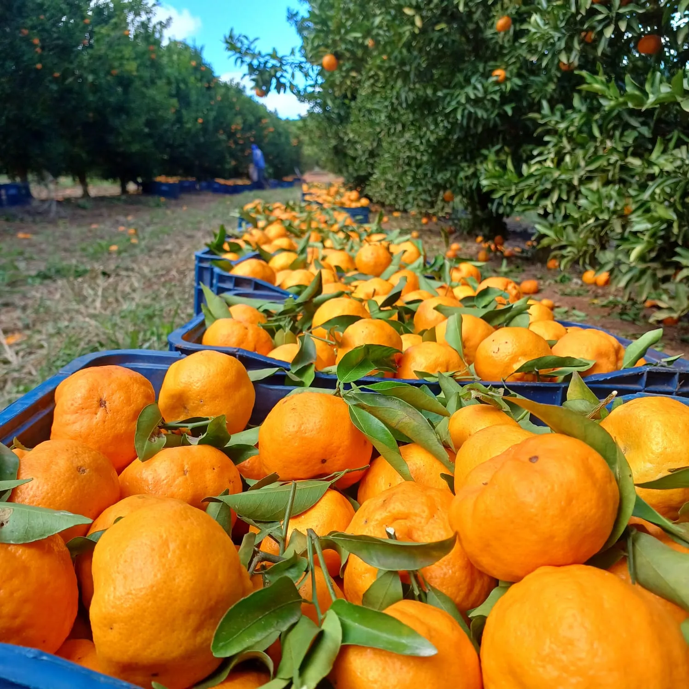

Nossa produção
A DFrasson Minas trabalha com um mix diversificado de culturas — citros, abacate, goiaba e lichia — priorizando qualidade, sazonalidade e o cuidado com o solo que alimenta tudo isso.
Todas as variedades

Citrus sinensis
Nosso principal produto. Cultivamos dez variedades selecionadas para atender os mais exigentes padrões de sabor, tamanho e rendimento de suco.

Citrus reticulata
Colhidas na época certa do ano para garantir a máxima concentração de açúcares e o sabor adocicado característico. Três variedades premiadas.

Citrus latifolia
O limão mais consumido no Brasil, cultivado em nossos pomares com rigor técnico para garantir acidez equilibrada, casca firme e alto rendimento de suco — disponível o ano todo.

Diversificação
Para além dos citros, a DFrasson Minas cultiva abacate e Goiaba Cortbel — variedades selecionadas que ampliam nossa oferta com o mesmo padrão de cuidado e qualidade que marca tudo que produzimos.

Litchi chinensis
Fruta exótica de colheita sazonal, com polpa doce, suculenta e perfumada. Um item especial do nosso mix, colhido no ponto certo para garantir o máximo de sabor.
Como trabalhamos
Escolhemos cada variedade com base na adaptação ao solo mineiro, demanda do mercado e potencial de sabor — decisão técnica aliada à experiência do fundador.
Técnicas modernas de irrigação, nutrição do solo e manejo integrado de pragas garantem frutos saudáveis sem comprometer o ambiente.
Monitoramos cada pomar para colher no momento exato — quando o equilíbrio entre acidez e dulçor está perfeito e o fruto no pico do sabor.
Após a colheita, as frutas passam por seleção rigorosa antes de seguir para o destino — garantindo frescor e padrão em cada lote que sai da fazenda.


Produção
Colhido no ponto. Entregue com frescor.

Sazonalidade
Cada fruta, na sua melhor época

Conheça a empresa